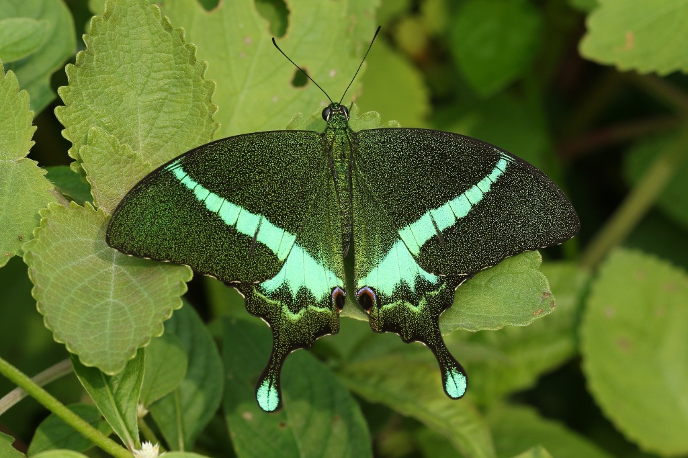

6 படங்கள்

Sadheeskumar K (TNBS) · TNBS Member Archive

இயற்கை மற்றும் பட்டாம்பூச்சி சங்கம் · தமிழ்நாடு
தமிழ்நாட்டின் 329 பட்டாம்பூச்சி இனங்களுக்கான கள வழிகாட்டி, தமிழ்ப் பெயர்கள், பல கோணப் புகைப்படங்கள், Butterfly Vision AI மற்றும் நேரடி iNaturalist பதிவுகளை இங்கே ஆராயுங்கள்.
தமிழ்நாடு கள வழிகாட்டி
தமிழ்ப் பெயர், ஆங்கிலப் பெயர், அறிவியல் பெயர், உணவூட்டும் தாவரம் அல்லது புகைப்படக் கலைஞர் பெயர் கொண்டு 329 இனங்களையும் தேடலாம்.
Sadheeskumar K (TNBS) · TNBS Member Archive
முதன்மை இனங்கள் அறிமுகம்
Sadheeskumar K (TNBS) · TNBS Member Archive
Papilio crino
மரகதப் பச்சைத் தகைவிலான் வாலி மற்றும் இயற்கை மற்றும் பட்டாம்பூச்சி சங்கத்தின் (TNBS) சின்னப் பட்டாம்பூச்சி
கல்லார், சிறுவாணி, கோயம்புத்தூர், பச்சைமலை மற்றும் சேலம் மலையடிவாரங்கள் உட்படத் தமிழ்நாட்டின் மலைகளிலும் சமவெளிகளிலும் பரவலாகக் காணப்படுகிறது.
பல்லுயிர் & வலசை
மேற்குத் தொடர்ச்சி மலை, கிழக்குத் தொடர்ச்சி மலை, கோவை ஈரநிலங்கள் மற்றும் பருவகால வலசைப் பாதைகளைத் தாவல்களில் (Tabs) தேர்ந்தெடுத்துப் பார்க்கவும்.
ஈரப்பதமான பசுமைமாறாப் பள்ளத்தாக்குகள், மூங்கில் சரிவுகள் மற்றும் மலையடிவார நீரோடைகள் மேற்குத் தொடர்ச்சி மலைக்கே உரித்தான சிறப்பு இனங்கள் உட்பட 200-க்கும் மேற்பட்ட பட்டாம்பூச்சி இனங்களுக்குப் புகலிடமாக உள்ளன.
பல ஆண்டுகள் TNBS மேற்கொண்ட ஆவணப்படுத்தல் மூலம், தமிழ்நாட்டின் பட்டாம்பூச்சிப் பட்டியலில் ஏறத்தாழ மூன்றில் இரண்டு பங்கு இனங்களைக் கொண்ட முதன்மை மையமாக கல்லார் நிலைநிறுத்தப்பட்டது.
தமிழ்நாடு வனத்துறை மற்றும் WWF-India உடன் இணைந்து காப்பகத்தின் 8 வனச்சரகங்களிலும் நடத்தப்பட்ட இரண்டு ஆய்வுகளில் டிசம்பர் 2022-இல் 175 இனங்களும் ஜூன் 2024-இல் 185 இனங்களும் பதிவாகின.
கோயம்புத்தூர் அருகிலுள்ள ஈரமான நதிக்கரைக் காடுகள் தமிழ் மறவன் (Tamil Yeoman), கிளிப்பர் (Clipper), இந்தியச் செம்பழுப்பு இராஜா (Indian Tawny Rajah) மற்றும் மலபார் அழகி (Malabar Rose) ஆகியவற்றிற்கு உறைவிடமாக உள்ளன.
பச்சைமலை, சிறுமலை மற்றும் ஏற்காடு போன்ற தனித்தனி மலைத்தொடர்கள் உள்நாட்டுச் சமவெளிகளைப் பருவமழை இனப்பெருக்க வாழிடங்களுடன் இணைக்கின்றன.
டிசம்பர் 2024 ஆய்வில் 6 பட்டாம்பூச்சி குடும்பங்களும் பதிவாகின; வனவிலங்குப் பாதுகாப்புச் சட்ட அட்டவணை II-இல் உள்ள Banded Royal இனத்தின் ஆரோக்கியமான எண்ணிக்கை இதில் குறிப்பிடத்தக்கதாகும்.
அக்டோபர் 2022 கூட்டு கணக்கெடுப்பில் பழனி புதர்ப்பழுப்புடன் (Palni Bushbrown) சேர்ந்து Plane பட்டாம்பூச்சியின் முதல் கிழக்குத் தொடர்ச்சி மலைப் பதிவும் இணைக்கப்பட்டது.
ஏற்காடு மற்றும் சேலம் மலைகளில் பெய்யும் பலத்த தென்மேற்குப் பருவமழை, செப்டம்பர் பிற்பகுதியில் தென்மேற்கு திசை நோக்கிப் பறக்கும் பட்டாம்பூச்சித் திரள்களைத் தூண்டுகிறது.
இயற்கை உணவூட்டும் தாவரங்களையும் ஏரிக்கரைகளையும் மீட்டெடுப்பது நகரங்களுக்குள்ளேயே 100-க்கும் மேற்பட்ட உள்ளூர் இனங்களை எவ்வாறு நிலைநிறுத்துகிறது என்பதை முறையான ஈரநிலப் பட்டியல்கள் காட்டுகின்றன.
5 ஆண்டு கால TNBS ஆய்வில், ஏரிக் கரைகள், புல்வெளிகள் மற்றும் வருடாந்திர City Nature Challenge நடைகள் வழியாக நூற்றுக்கும் மேற்பட்ட பட்டாம்பூச்சி இனங்கள் பதிவு செய்யப்பட்டன.
ஓராண்டு TNBS ஆய்வு KKPA அமைப்புடன் இணைந்து உள்ளூர் உணவூட்டும் தாவரங்களை நட வழிகாட்டியது; இது 2024-இல் கோயம்புத்தூரின் முதல் பிரத்யேகப் பட்டாம்பூச்சிப் பூங்காவாக உருவானது.
இலவசத் தமிழ் விழிப்புணர்வுச் சுவரொட்டிகளும் கையேடுகளும் நகர்ப்புறத் தோட்டப் பட்டாம்பூச்சிகளைக் கண்டறியவும் கம்பளிப்பூச்சி உணவூட்டும் தாவரங்களை வளர்க்கவும் மாணவர்களுக்கு உதவுகின்றன.
தமிழ்நாட்டின் மலைத்தொடர்களுக்கு இடையே தென்மேற்கு மற்றும் வடகிழக்குப் பருவமழைக் காற்றால் இயக்கப்படும் இரு பருவகால வலசைத் திசைகளை TNBS தொடர்ந்து கண்காணிக்கிறது.
தென்மேற்குப் பருவமழைக்கு முன்னதாக நீல வரியன்களும் கருப்பன்களும் பொள்ளாச்சி மற்றும் கோவை மலைகளிலிருந்து திருப்பூர், ஈரோடு மற்றும் சத்தியமங்கலம் நோக்கிப் புறப்படுகின்றன.
லட்சக்கணக்கான கருநீல வரியன்கள் (நீல வரியன்களுடன் 95% பங்கு) மற்றும் கருப்பன்கள் ஏற்காடு/சேலத்திலிருந்து கோவை வழியாக நீலகிரி மற்றும் ஆனைமலை நோக்கித் திரளாகப் பறக்கின்றன.
முதுமலை புலிகள் காப்பகப் பருவமழைக் கணக்கெடுப்பின் போது வரியன்கள் மற்றும் கருப்பன்களுடன் இணைந்து புல் மஞ்சள் (Common Grass Yellow) பட்டாம்பூச்சிகளின் அரிய பெருந்திரள் நகர்வு பதிவானது.
AI அடையாள உதவி
TNBS உறுப்பினர் தெய்வபிரகாசம் ஹரி உருவாக்கிய Butterfly Vision ஆழ்கற்றல் AI தளத்தில் இந்தியப் பட்டாம்பூச்சிகளை நொடிகளில் அடையாளம் காணலாம்.
TNBS கள வழிகாட்டியின் ஒவ்வொரு இன அட்டையும் Butterfly Vision AI ஆதரவுடன் இணைக்கப்பட்டுள்ளது; மாணவர்கள் மற்றும் கள ஆர்வலர்கள் இனங்களை விரைந்து உறுதிசெய்ய இது உதவுகிறது.
நாம் யார்
இயற்கை மற்றும் பட்டாம்பூச்சி சங்கம் (TNBS), கோயம்புத்தூரைத் தலைமையிடமாகக் கொண்டு பதிவு செய்யப்பட்ட (பதிவு எண்: 259/2018 (தமிழ்நாடு சங்கங்கள் பதிவுச் சட்டம், 1975)) குடிமை அறிவியல் அமைப்பாகும். தமிழ்நாடு முழுவதும் இயற்கை ஆர்வலர்கள், ஆய்வாளர்கள், மாணவர்கள் மற்றும் வனத்துறையினரை இணைத்துப் பட்டாம்பூச்சிகளை ஆவணப்படுத்தி வருகிறோம்.
2012-2014 காலகட்டத்தில் தமிழ்நாட்டின் முதல் பிரத்யேக மாநிலப் பட்டாம்பூச்சிப் பட்டியலை உருவாக்கும் முயற்சியாகத் தொடங்கிய இப்பணி, இன்று Tamilnadu Butterflies முகநூல் குழு (நிறுவப்பட்டது 02 அக் 2014; தமிழ்நாட்டின் 38 மாவட்டங்கள் மற்றும் புதுச்சேரியிலிருந்து 2,340+ உறுப்பினர்கள்) கொண்ட பெருங்குழுமமாக வளர்ந்துள்ளது.
முதுமலை புலிகள் காப்பகம் மற்றும் பச்சைமலைக் காடுகளில் இணைந்து நடத்தும் பருவகாலப் பட்டாம்பூச்சி ஆய்வுகள், நீல வரியன் & கருப்பன் வலசைப் பயணக் கண்காணிப்பு, மற்றும் அரசுப் பள்ளிகளுக்கு இலவசத் தமிழ் பட்டாம்பூச்சிச் சுவரொட்டிகள் வழங்குதல் ஆகிய பணிகள் மூலம் களத் தரவுகளைப் பொதுப் பாதுகாப்பு அறிவாக மாற்றி வருகிறோம்.
சங்கத்தின் காலாண்டிதழ்
27 காலாண்டிதழ்கள் மற்றும் 147 பட்டியலிடப்பட்ட கட்டுரைகளை வாசியுங்கள்: 2024 Danainae வலசை அறிக்கை, முதுமலை & பச்சைமலை வன ஆய்வுகள், வாழ்க்கைச் சுழற்சி ஆய்வுகள், பள்ளி விழிப்புணர்வுத் திட்டங்கள் மற்றும் மாநிலப் பட்டியல் புதுப்பிப்புகள்.
செய்திகள் & இதழ் அறிக்கைகள்
சேலம், நாமக்கல், ஈரோடு, திருப்பூர் மற்றும் கோயம்புத்தூர் ஆகிய ஐந்து மேற்கு மாவட்டங்களில் பருவமழைக்குப் பிந்தைய நீல வரியன்கள், கருநீல வரியன்கள் மற்றும் இரண்டு கருப்பன் பட்டாம்பூச்சி இனங்களின் பருவகால நகர்வை TNBS உறுப்பினர்கள் பதிவு செய்தனர்.
உள்ளூர் இயற்கை ஆர்வலர் ஒருவர் சிவகங்கை அருகே Painted Lady பட்டாம்பூச்சியை ஆவணப்படுத்தினார்; உள்நாட்டுச் சமவெளியில் இப்பதிவு காணப்பட்டதற்கான பருவகால வலசைப் பரவல் காரணிகளை TNBS உறுப்பினர் ரமணசரண் ஹரி விளக்கினார்.
உலகளாவிய நகர்ப்புற உயிர்ப்பன்மயப் போட்டியின் போது கோயம்புத்தூரில் உள்ள தாவரங்கள், பட்டாம்பூச்சிகள், பறவைகள் மற்றும் பூச்சிகளை ஆவணப்படுத்த உள்ளூர் இயற்கைப் பாதுகாப்பு அமைப்புகள் மற்றும் குடிமை அறிவியலாளர்களுடன் TNBS இணைந்தது.
மதுரை இயற்கை மற்றும் பண்பாட்டு மன்றம் சதுரகிரிப் பாதையில் இப்பொட்டுப் பட்டாம்பூச்சியைப் பதிவு செய்தது; இதனை அடையாளம் காணும் நுணுக்கங்களை TNBS உறுப்பினர் பகிர்ந்து கொண்டார்.
கோயம்புத்தூர் வனக்கோட்டம், கோயம்புத்தூர் இயற்கைச் சங்கம் (CNS), TNBS மற்றும் WWF-India ஆகியவற்றை ஒன்றிணைக்கும் வருடாந்திரக் கூட்டு களக் கணக்கெடுப்பு.
பருவமழைக்கு முந்தைய (ஏப்ரல்-மே, நிமிடத்திற்கு 25-30) மற்றும் பருவமழைக்குப் பிந்தைய (செப்டம்பர் பிற்பகுதி, ஏற்காடு, சேலம், திருப்பூர் மற்றும் கோயம்புத்தூரில் நிமிடத்திற்கு 200 வரை) வரியன்கள் மற்றும் கருப்பன்களின் வலசையை அ. பாவேந்தன் விவரிக்கிறார்.
சமூகம் & வெளிப்புறத் தளங்கள்
தமிழ்நாட்டின் 38 மாவட்டங்கள் மற்றும் புதுச்சேரியைச் சேர்ந்த இயற்கை ஆர்வலர்கள் பதிவுகளைப் பகிரவும், இன அடையாளம் கேட்கவும், வலசை எண்ணிக்கைகளைப் பதிவு செய்யவும் செயல்படும் குடிமை அறிவியல் தளம்.
மேற்குத் தொடர்ச்சி மலை மற்றும் இந்தியப் பட்டாம்பூச்சிகளை உடனடியாக அடையாளம் காண TNBS உறுப்பினர் தெய்வபிரகாசம் ஹரி உருவாக்கிய ஆழ்கற்றல் (Deep-learning) கருவி.
தமிழ்நாடு பட்டாம்பூச்சிப் பட்டியல் சரிபார்ப்பு, வனத்துறை ஆய்வுகள், வலசை ஆய்வுகள் மற்றும் பட்டாம்பூச்சி இதழ் குறித்து TNBS தலைவர் அ. பாவேந்தன் உரையாற்றுகிறார்.
பங்கேற்க
ஒரு தெளிவான புகைப்படம், தேதி மற்றும் இடம் ஆகியவை ஒரு சாதாரணப் பார்வையை அறிவியல் தரவாக மாற்றும்.